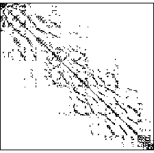

Many of the matrices encountered when trying to solve systems of differential equations consist mostly of zero entries. At the same time those matrices are very large, and therefore storage is expensive in terms of memory. deal.II attempts to resolve this problem by providing means of generating memory efficient structures for sparse matrices where only non-zero elements are stored.
To show only two example of matrices which are quite typical of finite element discretizations of partial differential equations, we present the following two graphics, in which each dot represents a non-zero entry of the matrix:

The first is a 300x300 matrix, the second has approximately 4000 rows and columns. As can be seen, the vast majority of entries is zero, and we can also guess that the proportion of zeroes is even growing as the matrix size is increased (this is in fact so, but can not so clearly be seen from the pictures, admittedly). The equation discretized to yield these matrices is rather complex, so the number of non-zero entries per row is quite large for finite element matrices. Both matrices were derived after renumbering of the degrees of freedom using the algorithm of Cuthill-McKee, which concentrates the entries around the diagonal of the matrix.
Before you can build the appropriate matrices for your problem you need to ascertain where the components of your matrix are non-zero and generate a structure for storing the matrix accordingly. This structure is then used to actually initialize the matrix, i.e. tell the matrix for which elements to allocate memory.
The deal.II function initializing a standard sparse matrix
structure is void SparseMatrixStruct::reinit(const unsigned int m, const unsigned int n, const unsigned int max_per_row). It takes as its arguments
the size of the matrix in question and the maximum number of non-zero elements
in one row. This first sets up a blank sparsity pattern which,
however, has as yet no information which entries are non-zero.
Before going on with showing how to find out which elements are
non-zero, we have to talk about how to find out about the maximum
number of non-zero entries per row which we will need for our matrix.
Since this number depends of the actual finite element used (higher
order elements need more non-zero entries than linear elements, for
example), of the equation under consideration, and of some properties
of the triangulation on which we want to do our computations. Since
all these factors can't be considered by the user all the time, there
is a library function which does the necessary computations for you:
unsigned int DoFHandler::max_couplings_between_dofs().
We note that this function was written to cope with refined grids, and
if you only have structured grids without local refinement and hanging
nodes, the result of this function will overestimate the maximal
number of non-zero entries per row.
After having fixed the basic properties of the sparsity structure, we
can tell it which entries actually are non-zero. This is again done
using a library function,
DoFTools::make_sparsity_pattern. Then we have to take
into account that constraints due to hanging nodes (see the previous
chapter) add some more non-zero entries, which is again done using
some library functions (see the example below). After this, we can
instruct the sparsity pattern to throw out all unused elements
(in those rows where the actual number of non-zero elements is less
than the maximal number given to reinit, we can discard
the unused one to save some more memory). This is discussed in the
next subsection.
This matrix structure can then be used to serve as sparsity pattern to
one or several matrices using
void SparseMatrix::reinit(const SparseMatrixStruct&sparsity).
We note the distinction that the SparseMatrixStruct only
stores the places of the non-zero elements, while the
SparseMatrix actually stores the values of these
elements. The separation was made since often several matrices are
needed with the same sparsity pattern, but different entry values;
this way, we can save some memory space.
Example: We show the include files you need, the definitions and the function calls. Make sure to use them in their appropriate places. This example initializes a sparse square matrix structure.
#include <grid/dof.h>
#include <lac/sparsematrix.h>
#include <basic/dof_tools.h>
const unsigned int dim=2; // For example
SparseMatrixStruct sparsity_pattern;
DoFHandler<dim> dof_handler;
// set up a triangulation, refine it, associate the DoFHandler object
// shown above to it, and distribute the degrees of freedom
...
// now fix the size of the matrix and the maximal number
// of non-zero entries:
sparsity_pattern.reinit (dof_handler.n_dofs(),
dof_handler.n_dofs(),
dof_handler.max_couplings_between_dofs());
// tell the sparsity pattern which entries are non-zero:
make_sparsity_pattern (dof_handler, sparsity_pattern);
// Condense the hanging nodes into
// the matrix structure, taking into account the constraints due to
// the hanging nodes.
// You can skip this part if your grid is not locally refined.
ConstraintMatrix hanging_nodes;
dof_handler.make_constraint_matrix(hanging_nodes);
hanging_nodes.condense (sparsity_pattern);
Sparse matrix structures can (and indeed must) be compressed before they are used
in objects of the class SparseMatrix<> that actually hold the matrix
data. The reason for this is the way matrix structures and matrices are generated:
void SparseMatrixStruct::compress().
Example: Starting from the example above, we
compress our matrix structure sparsity_pattern.
sparsity_pattern.compress();
DoFTools::make_sparsity_pattern and
SparseMatrixStruct::reinit functions, which allow you to
more flexibly determine the actual number of non-zero elements of all
or individual rows. See the documentation of the respective classes
for more information.
| Next Chapter: Matrix and Vector Generation | Back to this chapter's index | Back to the tutorial index |
Last modified: $Date$